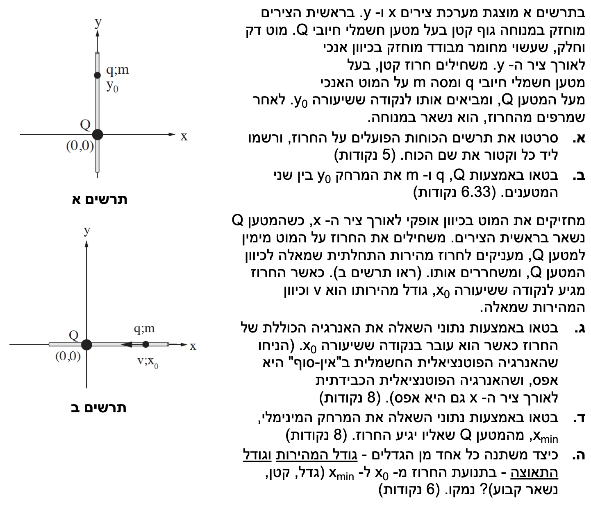
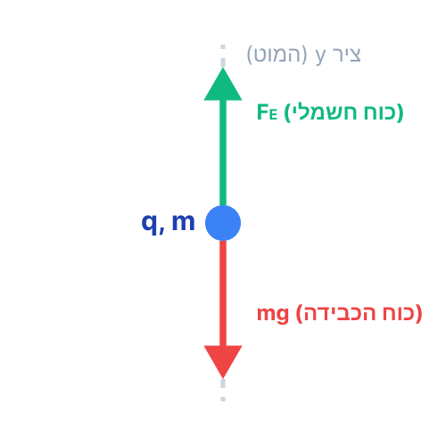

פתרון בגרות - חשמל 2012, שאלה 1
פיזיקה 5 יח"ל
פתרון מלא, מודרך ומוסבר צעד-אחר-צעד
עודכן:
--- --:--:--
מבט כללי על השאלה
בשאלה זו אנו חוקרים מערכת של מטענים נקודתיים במנוחה ובתנועה, תוך יישום חוקי ניוטון, חוק קולון ושיקולי אנרגיה.

[תמונת השאלה המקורית]
לא נמצאה תמונה בשם question-image.png באותה תיקייה.
מה נתון: מטען חיובי \( Q \) מוחזק במנוחה בראשית הצירים \((0,0)\). חרוז בעל מסה \( m \) ומטען חיובי \( q \) מושחל על מוט אנכי (ציר ה-y), מובא לנקודה \( y_0 \) ונשאר במנוחה. המוט דק, חלק ומבודד. נניח כי כל הגדלים נתונים ביחידות תקניות (MKS): מסה בק"ג, מטען בקולון, ומרחק במטרים.
מה מחפשים: לשרטט תרשים כוחות הפועלים על החרוז בעל המטען \( q \), ולרשום ליד כל וקטור את שם הכוח.
נוסחאות ועקרונות בשימוש:
\( \Sigma \vec{F} = 0 \)
\( F = mg \)
\( F = k \frac{q_1 q_2}{r^2} \)
פתרון צעד-אחר-צעד:
על החרוז הפועלים שני כוחות עיקריים לאורך ציר ה-y:
- כוח הכבידה (\( mg \)): פועל תמיד כלפי מטה (בכיוון השלילי של ציר y).
- כוח חשמלי (\( F_E \)): מכיוון ששני המטענים חיוביים (\( q, Q > 0 \)), קיים ביניהם כוח דחייה. המטען \( Q \) נמצא בראשית והחרוז מעליו ב- \( y_0 \), לכן הכוח החשמלי הפועל על החרוז הוא כלפי מעלה.
כיוון שהמוט חלק ואנכי לחלוטין, והכוח החשמלי פועל בדיוק לאורך ציר המוט, אין רכיב כוח אופקי שדוחף את החרוז אל המוט, ולכן לא פועל כוח נורמל מצידו (או שהוא זניח/אפסי במצב אידאלי זה).

[תרשים סעיף א]
לא נמצאה תמונה בשם image-1.png באותה תיקייה.
טיפ מורה: בציור תרשים כוחות (FBD), חשוב לזכור שלווקטור יש גם גודל וגם כיוון, ואורך החץ שאנו מציירים אמור לשקף את גודל הכוח. במקרה שלנו, מכיוון שהגוף בשיווי משקל (\( \Sigma \vec{F} = 0 \)), אנו יודעים ששני הכוחות צריכים להיות שווים בגודלם ומנוגדים בכיוונם, ולכן נשתדל למתוח קווים באורך זהה בתרשים. לתשומת ליבכם: בבחינות הבגרות מופיעות לא פעם שאלות הדורשות זיהוי של תרשים הכוחות הנכון מתוך מספר חלופות. בשאלות אלו, הקפדה על יחס נכון בין אורכי הווקטורים מהווה שיקול מרכזי בבחירת התשובה הנכונה.
מה נתון: מערכת הכוחות מסעיף א' נמצאת בשיווי משקל סטטי (החרוז במנוחה).
מה מחפשים: לבטא את המרחק \( y_0 \) (מקום החרוז) באמצעות הגדלים \( Q, q, m \).
נוסחאות ועקרונות בשימוש:
\( \Sigma F_y = m a_y = 0 \)
\( F_E = k \frac{q Q}{r^2} \)
חישוב:
נבחר את ציר ה-\( y \) כחיובי כלפי מעלה. מכיוון שהתאוצה היא אפס (\( a_y = 0 \)), נרשום את משוואת הכוחות:
\[ \Sigma F_y = F_E - mg = 0 \]
מכאן נובע שהכוח החשמלי שווה בגודלו לכוח הכבידה:
\[ F_E = mg \]
נציב את הביטוי לכוח החשמלי מחוק קולון (כאשר המרחק הוא \( y_0 \)):
\[ k \frac{q Q}{y_0^2} = mg \]
כעת, נבודד את הנעלם שלנו, \( y_0 \). נכפול את שני האגפים ב- \( y_0^2 \) ונחלק ב- \( mg \):
\[ y_0^2 = \frac{k q Q}{mg} \]
נוציא שורש ריבועי (אנו יודעים כי \( y_0 > 0 \) לפי השרטוט):
\( y_0 = \sqrt{\frac{k \cdot q \cdot Q}{m \cdot g}} \)
טיפ מורה: זכרו שתאוצת הכובד \( g \) היא גודל חיובי קבוע (10 m/s²). סימן המינוס במשוואת הכוחות נובע מהבחירה שלנו בכיוון החיובי של הציר (למעלה). הקפדה על כיווני צירים מונעת טעויות סימן מיותרות!
מה נתון: משנים את המערכת: המוט מוחזק כעת אופקית לאורך ציר ה-x. החרוז מקבל מהירות התחלתית שמאלה לעבר המטען \( Q \). בנקודה ששיעורה \( x_0 \), מהירות החרוז היא \( v \). נתון כי האנרגיה הפוטנציאלית החשמלית באינסוף היא אפס (\( U_E(\infty) = 0 \)) וכן שהאנרגיה הפוטנציאלית הכובדית לאורך ציר ה-x היא אפס (\( U_G = 0 \)).
מה מחפשים: לבטא את האנרגיה הכוללת (מכנית + חשמלית) של החרוז כשהוא עובר בנקודה \( x_0 \).
נוסחאות ועקרונות בשימוש:
\( E_k = \frac{1}{2}mv^2 \)
\( V = k\frac{q}{r} \)
\( U_E = q V = k\frac{qQ}{r} \)
\( E_{total} = E_k + U_E + U_G \)
חישוב:
האנרגיה הכוללת של החרוז מורכבת מהאנרגיה הקינטית שלו (בשל תנועתו) והאנרגיה הפוטנציאלית החשמלית שלו (בשל נוכחותו בשדה של מטען \( Q \)). האנרגיה הכובדית מוגדרת כאפס לאורך הציר.
נחשב את האנרגיה הקינטית בנקודה \( x_0 \):
\[ E_k = \frac{1}{2} m v^2 \]
נחשב את האנרגיה הפוטנציאלית החשמלית במרחק \( x_0 \) מהמטען \( Q \). נפתח זאת מדף הנוסחאות:
\[ U_E = q \cdot V_{source} = q \cdot \left( k \frac{Q}{x_0} \right) = k \frac{q Q}{x_0} \]
נחבר את שני הרכיבים לקבלת האנרגיה הכוללת בנקודה זו:
\( E_{total} = \frac{1}{2} m v^2 + k \frac{q Q}{x_0} \)
טיפ מורה: שימו לב שאנרגיה היא גודל סקלרי (אין לה כיוון). לכן, העובדה שהמהירות מכוונת "שמאלה" (כיוון שלילי) לא משנה כלל את הסימן של האנרגיה הקינטית, משום שהמהירות מועלית בריבוע (\( v^2 \)).
מה נתון: החרוז ממשיך לנוע שמאלה תחת השפעת כוח הדחייה החשמלי, עד שהוא מגיע למרחק המינימלי \( x_{min} \) מהמטען \( Q \). בנקודת המרחק המינימלי (נקודת חזרה), החרוז נעצר רגעית לפני שהוא משנה את כיוון תנועתו. לכן, גודל המהירות בנקודה זו הוא אפס (\( v_{final} = 0 \)).
מה מחפשים: לבטא את המרחק המינימלי \( x_{min} \) אליו יגיע החרוז.
נוסחאות ועקרונות בשימוש:
\( W_{nc} = \Delta E = 0 \)
\( E_{total}(initial) = E_{total}(final) \)
חישוב:
אנו מסתמכים על עקרון שימור האנרגיה המכנית. חוק זה מתקיים מכיוון שאין כוחות שאינם משמרים אשר מבצעים עבודה במערכת. הכוח היחיד שמבצע עבודה במהלך התנועה הוא הכוח החשמלי, שהוא כוח משמר. (הכוח הנורמלי, אם קיים מהמוט, מאונך לכיוון התנועה ולכן ממילא אינו מבצע עבודה).
נשווה את האנרגיה הכוללת בנקודה ההתחלתית \( x_0 \) (שמצאנו בסעיף ג') לאנרגיה הכוללת בנקודת המרחק המינימלי \( x_{min} \).
בנקודה \( x_{min} \), האנרגיה הקינטית היא אפס משום שהחרוז עוצר רגעית. האנרגיה מורכבת אך ורק מאנרגיה פוטנציאלית חשמלית:
\[ E_{total}(x_{min}) = E_k + U_E = 0 + k \frac{q Q}{x_{min}} = k \frac{q Q}{x_{min}} \]
לפי חוק שימור האנרגיה נשווה ביטוי זה לביטוי מסעיף ג':
\[ \frac{1}{2} m v^2 + k \frac{q Q}{x_0} = k \frac{q Q}{x_{min}} \]
המטרה שלנו היא לבודד את \( x_{min} \). נסמן את האגף השמאלי כ- \( E_{tot} \) לשם נוחות זמנית:
\[ E_{tot} = k \frac{q Q}{x_{min}} \implies x_{min} = \frac{k q Q}{E_{tot}} \]
נציב בחזרה את הביטוי המלא של \( E_{tot} \):
\[ x_{min} = \frac{k q Q}{\frac{1}{2} m v^2 + k \frac{q Q}{x_0}} \]
כדי לקבל שבר יפה ופשוט יותר מבחינה אלגברית, נוכל להכפיל את המונה והמכנה בביטוי \( 2 x_0 \):
\( x_{min} = \frac{2 \cdot k \cdot q \cdot Q \cdot x_0}{m \cdot v^2 \cdot x_0 + 2 \cdot k \cdot q \cdot Q} \)
* הערה: גם התשובה לפני הפישוט האלגברי תתקבל בבחינה כנכונה במלואה.
טיפ מורה: תמיד כאשר שואלים אתכם על "מרחק מינימלי", "התקרבות מקסימלית" או "נקודת עצירה", מילת הקסם היא שבאותו רגע בדיוק המהירות היחסית מתאפסת (כלומר \( E_k = 0 \)). זהו רמז עבה להשתמש בחוק שימור האנרגיה!
מה נתון: החרוז נע מנקודה \( x_0 \) אל הנקודה \( x_{min} \) (כלומר, נע שמאלה כנגד כוח הדחייה החשמלי).
מה מחפשים: להסביר כיצד משתנים הגדלים הבאים: גודל המהירות ו- גודל התאוצה במהלך התנועה (האם הם גדלים, קטנים או נשארים קבועים).
נוסחאות ועקרונות בשימוש:
\( \Sigma F = m a \)
\( F_E = k \frac{q Q}{x^2} \)
ניתוח:
1. גודל התאוצה:
כאשר החרוז נע שמאלה מ- \( x_0 \) לכיוון \( x_{min} \), המרחק \( x \) בינו לבין המטען \( Q \) הולך וקטן.
לפי חוק קולון, הכוח החשמלי נמצא ביחס הפוך לריבוע המרחק \( F_E \propto \frac{1}{x^2} \). מכיוון שהמרחק \( x \) קטן, גודל הכוח החשמלי הדוחה הולך וגדל.
לפי החוק השני של ניוטון, התאוצה עומדת ביחס ישר לכוח השקול: \( a = \frac{F_E}{m} = \frac{k q Q}{m x^2} \). מכיוון שגודל הכוח גדל והמסה קבועה, אנו מסיקים כי גודל התאוצה גדל במהלך התנועה.
2. גודל המהירות:
החרוז מקיים תנועה שמאלה (כיוון המהירות הוא שמאלה). מנגד, הכוח החשמלי הפועל עליו הוא כוח דחייה, כלומר הוא פועל בכיוון ימינה (הרחקה מ- \( Q \)). מכיוון שכיוון התאוצה הוא ככיוון הכוח (ימינה), נוצר מצב בו וקטור המהירות מנוגד בכיוונו לוקטור התאוצה.
כאשר כיוון התאוצה מנוגד לכיוון התנועה, גודל המהירות קטן בהדרגה (עד שמתאפס לחלוטין בנקודה \( x_{min} \)).
סיכום: גודל התאוצה גדל, ואילו גודל המהירות קטן.
טיפ מורה: חשוב מאוד להבדיל בין התאוצה למהירות! התאוצה תלויה רק בכוחות הפועלים באותו רגע (מיקום הגוף). המהירות תלויה בהיסטוריה של התנועה. גוף יכול לנוע לאט מאוד (מהירות קטנה) אבל להיות נתון לכוח עצום באותו רגע (תאוצה גדולה מאוד) - בדיוק כמו שקורה לחרוז ברגע שלפני העצירה ב- \( x_{min} \). הקפידו לא להשתמש במילה "תאוטה" או "האטה", אלא תארו זאת כ"גודל המהירות קטן" כמו שעשינו כאן, זה מדויק פיזיקלית!